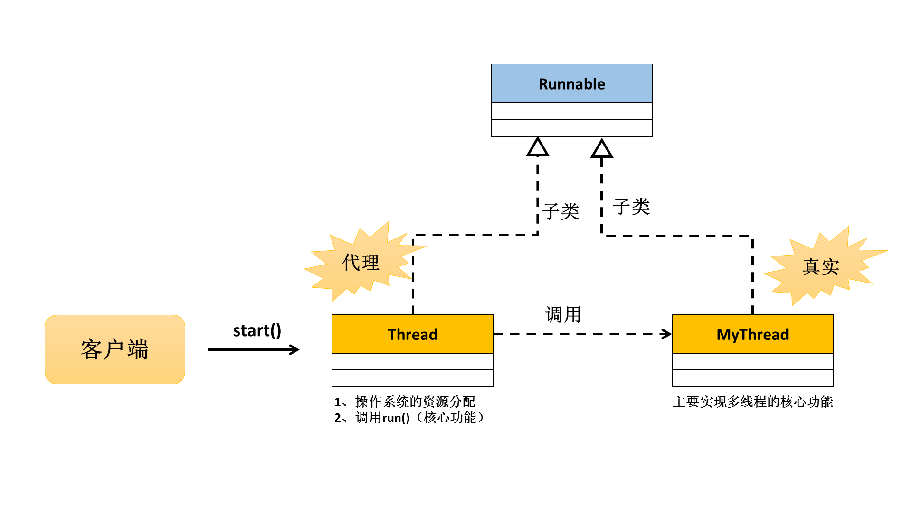

Java多线程基础实现
线程与进程
线程与进程的区别。
Java是一门为数不多的多线程支持的编程语言。
如果要想结束多线程之前首先需要来知道什么叫进程？在操作系统定义中，进程指的是一次程序的完整运行，这个运行的过程之中、内存、处理器、IO等资源都要为这个进程进行服务。
在同一个时间段上，会有多个进程去抢占资源，但是在某一个时间点上，只会有一个进程运行。
线程是在进程基础上进一步的划分结果，即：一个进程上可以同时创建多个线程。
线程是比进程更快的处理单元，而且所占的资源也小。
多线程的实现
掌握Java中三种多线程的实现方式（JDK1.5之后增加了第三种）。
如果想要在Java之中是实现多线程有两种途径：
- 继承Thread类；
- 实现Runnable接口（Callable接口）；
继承Thread类
Thread类是一个支持多线程的功能类，只要有一个子类它就可以实现多线程的支持。
class MyThread extends Thread { // 这就是一个多线程的操作类
}
所有程序的起点是main()方法，但是所有线程也一定要有一个自己的起点，那么这个起点就是run()方法，也就是说在多线程的每个主体类之中都必须覆写Thread类中所提供的run()方法。
public void run() {}
这个方法上没有返回值，那么也就表示了线程一旦开始就要一直执行，不能够返回内容。
// 线程操作主类
class MyThread extends Thread { // 这就是一个多线程的操作类
private String name; // 定义类中的属性
public MyThread(String name) { // 定义构造方法
this.name = name;
}
@Override
public void run() { // 覆写run()方法，作为线程的主体操作方法
for (int i = 0; i < 200; i ++) {
System.out.println(this.name + " ---> " + i);
}
}
}
本程序类的功能是进行循环的输出操作，所有的线程与线程是一样的，都必须轮流去抢占资源，所以多线程的执行应该是多个线程彼此交替执行，也就是说如果直接调用了run()方法，并不能启动多线程，多线程启动的唯一方法就是Thread类中的start()方法：public void start()（调用此方法执行的方法体是run()方法定义的）。
public class MainClass { // 主类
public static void main(String[] args) {
MyThread mt1 = new MyThread("线程A");
MyThread mt2 = new MyThread("线程B");
MyThread mt3 = new MyThread("线程C");
mt1.start();
mt2.start();
mt3.start();
}
}
此时每一个线程对象交替执行。
疑问？为什么多线程启动不是调用run()而必须调用start()？
打开Java的源代码，来观察一下start()方法的定义：
/**
* Causes this thread to begin execution; the Java Virtual Machine
* calls the <code>run</code> method of this thread.
* <p>
* The result is that two threads are running concurrently: the
* current thread (which returns from the call to the
* <code>start</code> method) and the other thread (which executes its
* <code>run</code> method).
* <p>
* It is never legal to start a thread more than once.
* In particular, a thread may not be restarted once it has completed
* execution.
*
* @exception IllegalThreadStateException if the thread was already
* started.
* @see #run()
* @see #stop()
*/
public synchronized void start() {
/**
* This method is not invoked for the main method thread or "system"
* group threads created/set up by the VM. Any new functionality added
* to this method in the future may have to also be added to the VM.
*
* A zero status value corresponds to state "NEW".
*/
if (threadStatus != 0)
throw new IllegalThreadStateException();
/* Notify the group that this thread is about to be started
* so that it can be added to the group's list of threads
* and the group's unstarted count can be decremented. */
group.add(this);
boolean started = false;
try {
start0();
started = true;
} finally {
try {
if (!started) {
group.threadStartFailed(this);
}
} catch (Throwable ignore) {
/* do nothing. If start0 threw a Throwable then
it will be passed up the call stack */
}
}
}
private native void start0();
首先方法在Thread类的start()方法里面存在有一个“IllegalThreadStateException”异常抛出。本方法里面使用了throw抛出异常，按照道理来讲应该使用try...catch处理，或者在start()方法声明上使用throws声明，但是此处并没有这样的代码，因为此异常属于RuntimeException的子类，属于选择性处理。如果某一个线程对象重复进行了启动，那么就会抛出此异常。
发现在start()方法里面要调用一的start0()方法，而且此方法的结构与抽象方法类似，唯一不同的是使用了native声明，在Java的开发里面有一门技术称为JNI技术（JavaNativeInterface），这门技术的特点：使用Java调用本机操作系统提供的函数。但是这样的技术有一个缺点，不能离开特定的操作系统。
如果想要线程能够执行，需要操作系统来进行资源分配，所以此操作严格来讲主要是由JVM负责根据不同的操作系统而实现的。
即：使用Thread类的start()方法不仅仅要启动多线程的执行代码，还要去根据不同的操作系统进行资源的分配。
实现Runnable接口
虽然Thread类可以是实现多线程的主体类定义，但是它有一个问题，Java的单继承局限，正因为如此，在任何情况下针对与类的继承都应该是回避的问题，那么多线程也一样，为了解决单继承局限的问题，在Java里面专门提供了Runnable接口。此接口定义如下：
@FunctionalInterface
public interface Runnable {
public void run();
}
在接口里面任何的方法都是public定义的权限，不存在默认的权限。
那么只需要让一个类实现Runnable接口即可，并且也需要覆写run()方法。
// 线程操作主类
class MyThread implements Runnable { // 这就是一个多线程的操作类
private String name; // 定义类中的属性
public MyThread(String name) { // 定义构造方法
this.name = name;
}
@Override
public void run() { // 覆写run()方法，作为线程的主体操作方法
for (int i = 0; i < 200; i ++) {
System.out.println(this.name + " ---> " + i);
}
}
}
与继承Thread类相比，此时的MyThread类在结构上与之前是没有区别的。但是有一点需要注意的是，如果直接继承了Thread类，那么可以直接继承start()方法，但是如果实现的是Runnable接口，并没有start()方法可以被继承。
不管何种情况下，如果要想启动多线程一定要依靠Thread类完成，在Thread类里面定义有一下的构造方法：
- 构造方法：public Thread(Runnable target)，接收的是Runnable接口对象;
范例： 启动多线程
public class MainClass { // 主类
public static void main(String[] args) {
MyThread mt1 = new MyThread("线程A");
MyThread mt2 = new MyThread("线程B");
MyThread mt3 = new MyThread("线程C");
new Thread(mt1).start();
new Thread(mt2).start();
new Thread(mt3).start();
}
}
此时就避免了单继承局限，那么也就是说在实际工作中使用Runnable接口是最合适的。
多线程两种实现方式的区别？（面试题）
首先一定要明确的是，使用Runnable接口与Thread类相比，解决了单继承的定义局限，所以不管后面的区别与联系是什么，至少这一点上就已经有了取舍 —— 如果要使用，一定使用Runnable接口。
观察Thread类的定义。
public class Thread extends Object implements Runnable
发现Thread类实现了Runnable接口。那么这样一来程序就变为了以下的形式。

此时整个的定义结构看起来非常像代理设计模式，如果是代理设计模式，客户端调用的代理类的方法也应该是接口里提供的方法，那么也应该是run()才对。
除了以上的联系之外，还有一点：使用Runnable接口可以比Thread类能够更好的描述出数据共享这一概念。此时的数据共享指的是多个线程访问统一资源的操作。
范例： 观察代码（每一个线程对象都必须通过start()启动）
package com.alpha;
class MyThread extends Thread { // 这就是一个多线程的操作类
private int ticket = 10;
@Override
public void run() { // 覆写run()方法，作为线程的主体操作方法
for (int i = 0; i < 100; i ++) {
if (this.ticket > 0) {
System.out.println("卖票，ticket = " + this.ticket --);
}
}
}
}
public class MainClass { // 主类
public static void main(String[] args) {
MyThread mt1 = new MyThread();
MyThread mt2 = new MyThread();
MyThread mt3 = new MyThread();
mt1.start();
mt2.start();
mt3.start();
}
}
本程序声明了三个MyThread类的对象，并且分别调用了三次start()方法，启动线程对象。但是发现最终的结果是每一个线程对象都在卖各自的10张票，此时并不存在数据共享。
范例： 利用Runnable实现
package com.alpha;
class MyThread implements Runnable { // 这就是一个多线程的操作类
private int ticket = 10;
@Override
public void run() { // 覆写run()方法，作为线程的主体操作方法
for (int i = 0; i < 100; i ++) {
if (this.ticket > 0) {
System.out.println("卖票，ticket = " + this.ticket --);
}
}
}
}
public class MainClass { // 主类
public static void main(String[] args) {
MyThread mt = new MyThread();
new Thread(mt).start();
new Thread(mt).start();
new Thread(mt).start();
}
}
面试题：请解释Thread类与Runnable接口实现多线程的区别？（面试题：请解释多线程两种实现方式的区别）
- Thread类是Runnable接口的子类，使用Runnable接口实现多继承可以避免单继承局限；
- Runnable接口实现的多线程可以比Thread类实现的多线程更加清楚的描述数据共享的概念。
面试题：请写出多线程两种实现操作。
如上。
第三种实现方式
使用Runnable接口实现的多线程可以避免单继承局限，但是Runnable里面的run()方法不能返回操作结果。为了解决这样的矛盾，提供了一个新的接口java.util.concurrent.Callable接口。
@FunctionalInterface
public interface Callable<V> {
public V call() throws Exception;
}
call()方法执行完线程的功能之后可以返回一个结果，而返回结果的类型由Callable接口上的泛型来决定。
范例： 定义一个线程主体类
import java.util.concurrent.Callable;
class MyThread implements Callable<String> {
private int ticket = 10;
@Override
public String call() throws Exception {
for (int i = 0; i < 100; i ++) {
if (this.ticket > 0) {
System.out.println("卖票，ticket = " + this.ticket --);
}
}
return "票已卖光！";
}
}
此时观察Thread类里面发现并没有直接支持Callable接口的多线程应用。
从JDK1.5开始提供有java.util.concurrent.FutureTask
public class FutureTask<V> extends Object implements RunnableFuture<V>
public interface RunnableFuture<V> extends Runnable, Future<V>
在FutureTask类里面定义有如下的构造方法：public FutureTask(Callable
接收的目的只有一个，那么就是取得call()方法的返回结果。
public class MainClass { // 主类
public static void main(String[] args) throws Exception {
MyThread mt1 = new MyThread();
MyThread mt2 = new MyThread();
FutureTask<String> task1 = new FutureTask<String>(mt1); // 目的是为了取得cvall()返回结果
FutureTask<String> task2 = new FutureTask<String>(mt2); // 目的是为了取得cvall()返回结果
// FuntureTask是Runnable接口子类，所以可以使用Thread类的构造来接收task对象
new Thread(task1).start();
new Thread(task2).start();
// 多线程执行完毕之后可以取得内容，依靠FutureTask的父接口Future中的get()方法完成
System.out.println("A线程的返回结果：" + task1.get());
System.out.println("B线程的返回结果：" + task2.get());
}
}
最麻烦的问题在于需要接受返回值信息，并且又要与原始的多线程的实现靠拢（向Thread类靠拢）。
总结
1、对于多线程的实现，重点在于Runnable接口与Thread类启动的配合上；
2、对于JDK1.5新特性，了解就行了，知道区别就在于返回结果上。